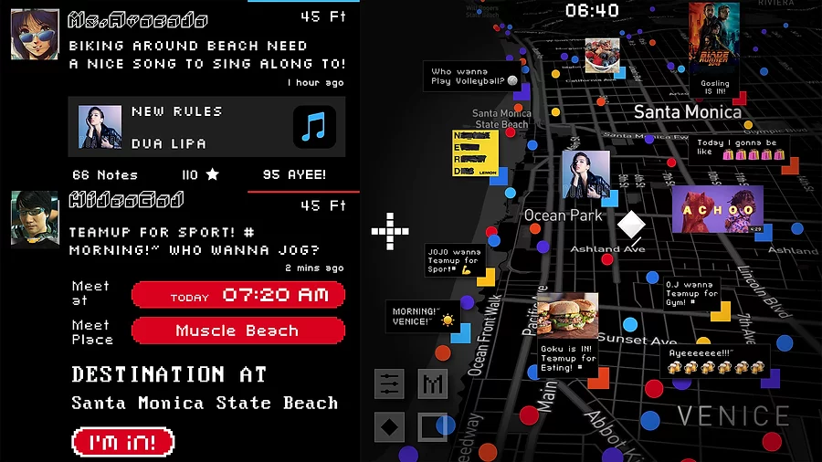
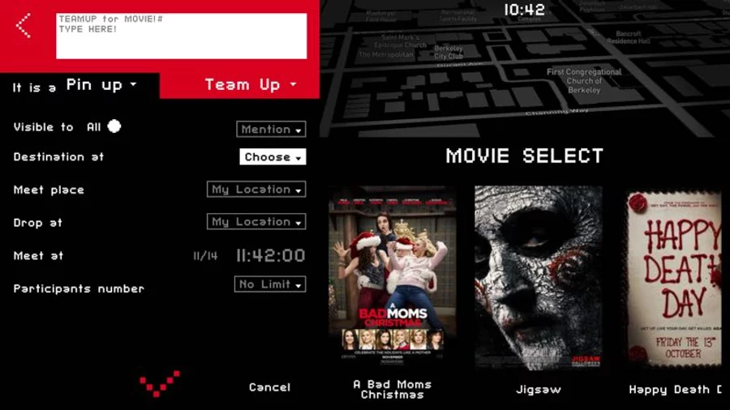

MapsReo
Xiangyu An (Founder of MapsReo LLC.), Mingzhou Guo (Sales and Marketing),
Xingjian Han (Technical Management)
Introduction
In 2017, I co-founded MapsReo LLC. at Berkeley. We developed a location-based social application, MapsReo, to enhance the community connectivity.
We launched the app at the end of 2017 and maintained the server for six month.
Concept
MapsReo is a location-based social application that provides people in the community a safe environment to hang out, it is also a guide of local living style. With two core functions - Pin-up and Team-up, people can express their feelings with any type of media content within a legal restriction and create Ad hoc activities to get together.
In MapsReo, We provide a safe platform for voice-sharing and activities meetups, combining imaginary and reality in social life to get a more intimate sense of the local community. Our goal was to use digital connections as a tool to maximize our real-life experience and to break the fetters of digital identities.
Poster
Interface

Designed by Xiangyu An

Designed by Xiangyu An